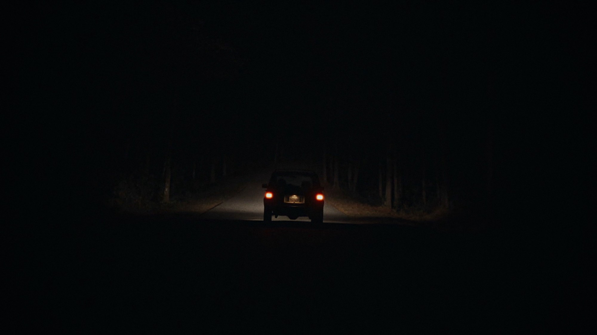

It Ends: quando esce e cosa sapere prima
Quattro amici, una strada nel bosco che non finisce mai e un budget di 30.000 dollari: l'horror che negli Stati Uniti ha convinto la critica arriva in sala il 28 ottobre
Una strada nel bosco, quattro amici in macchina e nessuna uscita: l'idea di It Ends si spiega in una riga, e forse per questo funziona. Il film di Alexander Ullom arriva nelle sale italiane il 28 ottobre 2026, distribuito da I Wonder Pictures, a pochi giorni da Halloween. Non l'abbiamo ancora visto, quindi qui trovate quello che si sa, da dove nasce e cosa ne ha scritto la critica americana, che finora lo ha accolto molto bene.
Di cosa parla It Ends?
I protagonisti sono quattro amici che hanno appena finito l'università e passano insieme quella che dovrebbe essere l'ultima serata prima che la vita li porti in direzioni diverse. Si fermano su una strada isolata in mezzo al bosco per cercare qualcosa da mangiare, e quando ripartono si accorgono che il percorso si ripete all'infinito: ovunque vadano, la strada ricomincia. Da lì in poi devono fare i conti con minacce soprannaturali e con le paure più normali, quelle sul futuro.
Nel cast ci sono Phinehas Yoon, Akira Jackson, Noah Toth e Mitchell Cole. Per Alexander Ullom, che ha scritto, diretto e montato il film, è il primo lungometraggio, e dura 89 minuti.

Come è nato un horror da 30.000 dollari
La parte più curiosa è la produzione. Il budget iniziale era di appena 30.000 dollari, messi in parti uguali da tre persone molto diverse tra loro: uno youtuber, un partecipante alla vicenda delle azioni GameStop e un conoscente conosciuto al tavolo del poker online. Altri 50.000 dollari sono serviti per la post-produzione. Una cifra minuscola per un film che poi è stato notato da un distributore importante.
Il film ha avuto la prima mondiale al festival South by Southwest il 7 marzo 2025. Neon ne ha poi acquistato i diritti il 18 dicembre 2025 e lo ha portato nelle sale americane il 21 agosto 2026. Nel frattempo Filmmaker Magazine aveva inserito Ullom tra i «25 nuovi volti» del cinema indipendente, come riporta Cinefilos.
Cosa ne ha scritto la critica
Su Rotten Tomatoes, alla data di oggi, il 93% delle 132 recensioni è positivo, e su Metacritic il punteggio è 75 su 100 sulla base di 26 critici, che significa giudizi «generalmente favorevoli». Sono numeri da tenere d'occhio, perché si muovono finché il film è in sala.
Siddhant Adlakha, su Variety, lo descrive come un'intelligente variazione moderna su A porte chiuse di Sartre, lodando il gruppo di giovani attori e la tensione che cresce. Matt Glasby, sul Radio Times, gli dà quattro stelle su cinque e scrive che il pericolo vero non è fisico ma esistenziale. Kristy Puchko, su Mashable, nota che il film lascia a ogni spettatore il compito di trovare da solo il significato, mentre Sam Adams, su Slate, avverte che si insinua lentamente e che per lunghi tratti sembra succedere poco. Quest'ultimo è un dato utile per chi va in sala: è un horror che vive di attesa, più che di sobbalzi.
A chi può piacere
Secondo le premesse e le recensioni, It Ends è per chi ama gli horror che partono da una situazione impossibile e la usano per parlare d'altro. Se avete apprezzato i film che trasformano un luogo senza uscita in una metafora, o se vi piacciono i gruppi di amici ben scritti più degli spaventi a ripetizione, è un titolo da segnare. Chi cerca azione e mostri a ogni scena rischia invece di annoiarsi, come avvertono i critici più cauti.
Appena potremo vederlo in sala vi diremo cosa ne pensiamo noi. Per ora la data da ricordare è mercoledì 28 ottobre: l'horror di Ullom arriva giusto in tempo per il fine settimana di Halloween, e il passaparola americano promette bene.
Domande frequenti
Quando esce It Ends in Italia?
Il 28 ottobre 2026 al cinema, distribuito da I Wonder Pictures. Negli Stati Uniti è uscito il 21 agosto 2026 con Neon.
Di cosa parla It Ends?
Quattro amici che hanno appena finito l'università passano insieme quella che dovrebbe essere l'ultima serata prima di separarsi. Si fermano su una strada isolata nel bosco e scoprono che il percorso si ripete all'infinito.
Quanto dura It Ends?
89 minuti.
Chi è il regista di It Ends?
Alexander Ullom, che con questo film firma il suo primo lungometraggio. Ha anche scritto e montato il film.